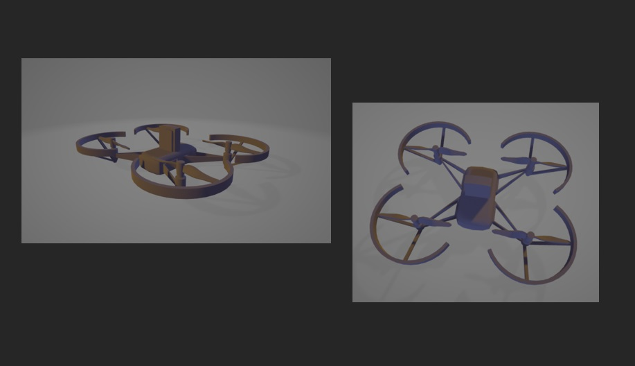

Drone Project | PA-C#.
For this project I am a part of a multidisciplinary group. My role was to create a to scale replica of the drone for use in the simulation with the Unity Game Engine and assist with the pathfinding algorithm.
The idea of this project is to implement machine and transfer learning into the simulation. And following that, program the hardware (drone) using the software we have developed.